Práctica 3.1
Instalación de Tomcat
Javier Rider Jimenez
1. Instalación de Tomcat
Primero debemos instalar el servidor Tomcat. Para ello ejecutamos el siguiente comando:
sudo apt install tomcat10 tomcat10-admin
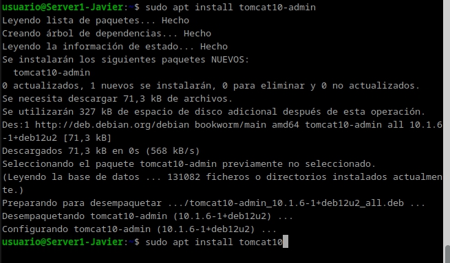
Tambien en caso de no tenerlo instalado instalamos java
sudo apt install default-jdk
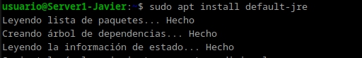 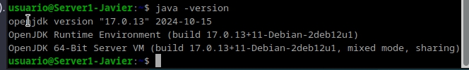
2. Configuración de Tomcat
comprobamos el puerto que esta en escucha con el comando:
ss -tln

Ahora modificamos el archivo de configuración de Tomcat. Añadimos las siguientes lineas:
sudo nano /etc/tomcat10/server.xml
<user username="manager" password="usuario" roles="manager-gui"/>
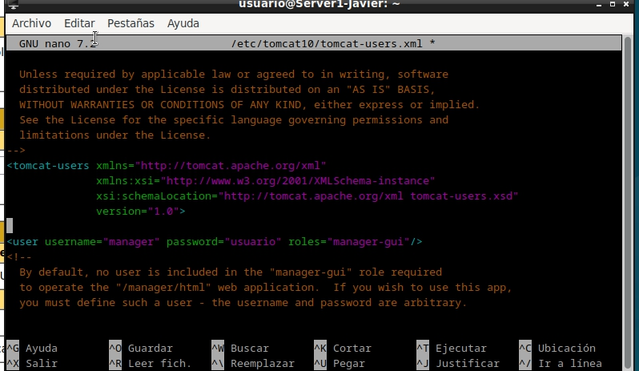
Reiniciamos el servicio de Tomcat con el comando:
sudo systemctl restart tomcat10
compobamos que el servicio esta en ejecución con el comando:
sudo systemctl status tomcat10
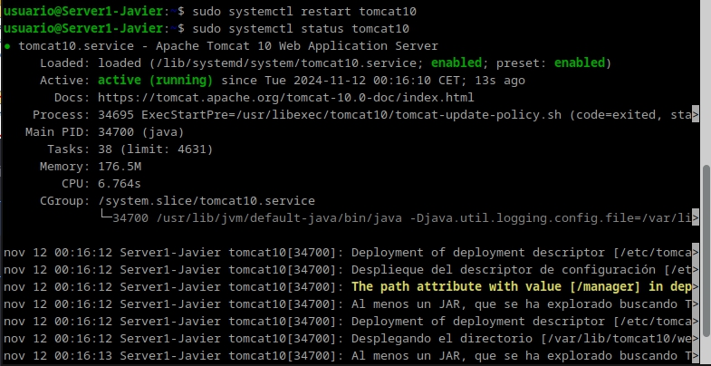
3. Acceso a la interfaz de administración
Ahora si vamos al navegador y vamos la dirección http://localhost:8080/manager/html podemos acceder a la interfaz de administración de Tomcat. Para acceder, introducimos el usuario y contraseña que hemos configurado en el archivo de configuración.
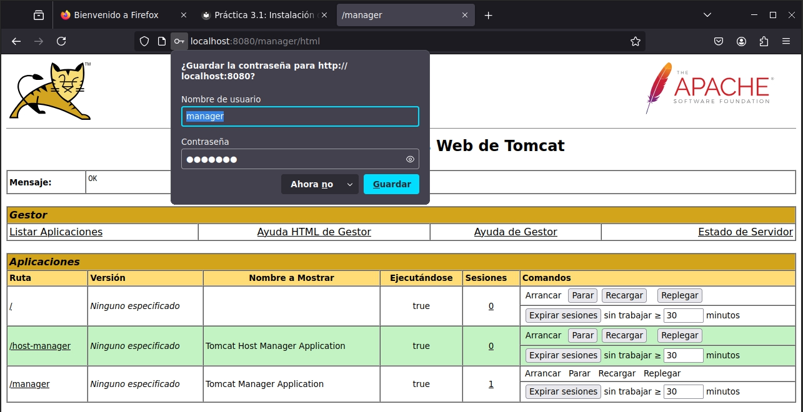
4. Despliegue de una aplicación
En la interfaz de administración de Tomcat, en la sección de WAR file to deploy, seleccionamos el archivo .war que queremos desplegar y pulsamos el botón de Deploy.
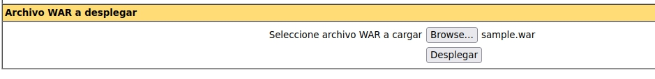
Una vez desplegado en la misma web http://localhost:8080/manager/html veremos que se ha cargado correctamente la aplicacion. Damos click en el nombre de la aplicacion y nos llevara a la pagina de inicio de la aplicacion.
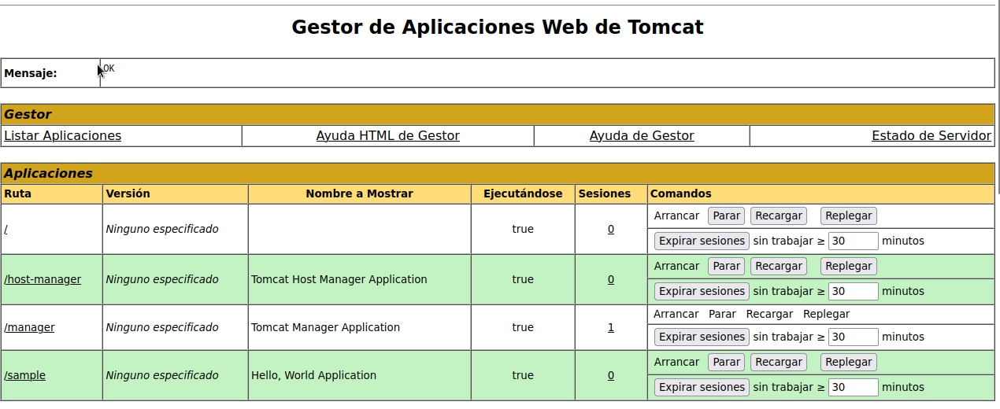
La aplicación funcionando correctamente.
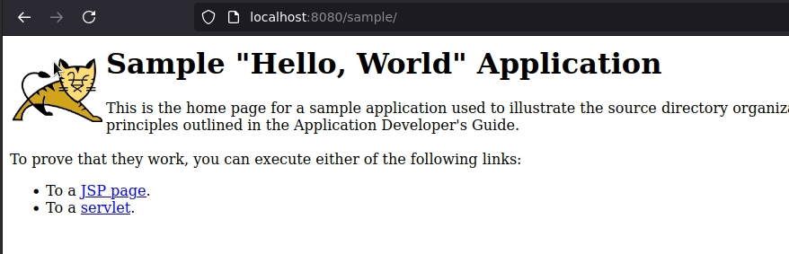
5. Instalación de Maven
Instalamos Maven con el siguiente comando:
sudo apt install maven
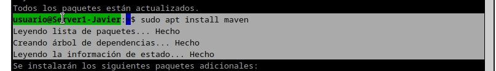
y con el siguiente comando comprobamos la versión de Maven:
mvn --v
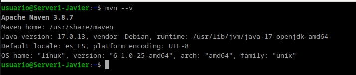
Ahora que esta funcionando reinicia el servicio de Tomcat con el comando:
sudo systemctl restart tomcat10
y chequeamos que el servicio esta en ejecución con el comando:
sudo systemctl status tomcat10
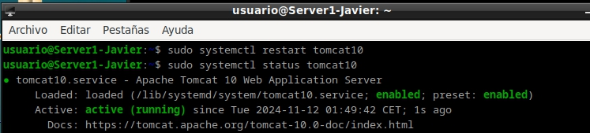
6. Configuración de Maven
Ahora modificamos el archivo de configuración de Maven. Añadimos las siguientes lineas dentro de la etiqueta <servers>:
sudo nano /etc/maven/settings.xml
<servers>
<server>
<id>TomcatP3.1</id>
<username>ryder-deploy</username>
<password>usuario</password>
</server>
</servers>
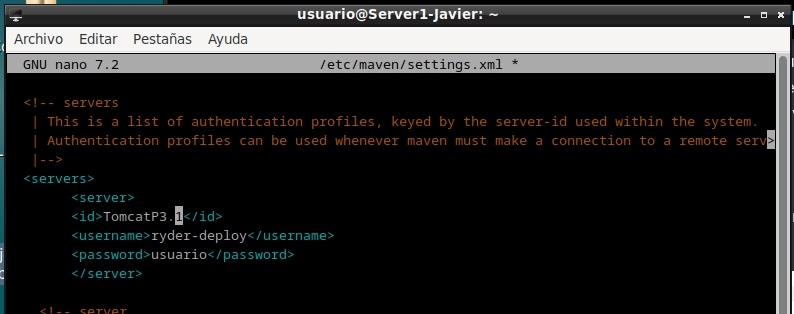
7. Despliegue de una aplicación con Maven
Primero debemos añadir un usuario en Tomcat. Para ello modificamos el archivo de configuración de Tomcat. Añadimos las siguientes lineas:
sudo nano /etc/tomcat10/tomcat-users.xml
<user username="ryder-deploy" password="usuario" roles="manager-script"/>
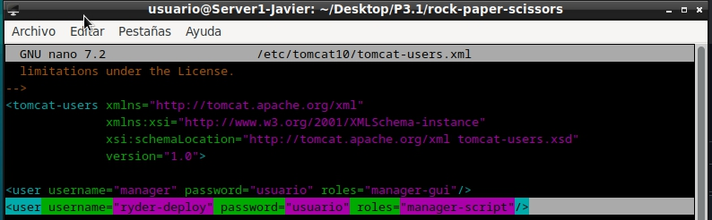
Debemos bajarnos un proyecto de ejemplo de Maven. en mi caso he usado un juego de piedra papel o tijera. Utilizando git clone descargamos el proyecto.
Una vez con el proyecto descargado, nos movemos a la carpeta del proyecto y ejecutamos el siguiente comando:
sudo nano /ruta/del/proyecto/pom.xml
y añadimos las siguientes lineas dentro de las etiquetas <build> y <plugins>:
<plugin>
<groupId>org.apache.tomcat.maven</groupId>
<artifactId>tomcat7-maven-plugin</artifactId>
<version>2.2</version>
<configuration>
<url>http://localhost:8080/manager/text</url>
<server>TomcatP3.1</server>
<path>/ryderJuego</path>
</configuration>
</plugin>
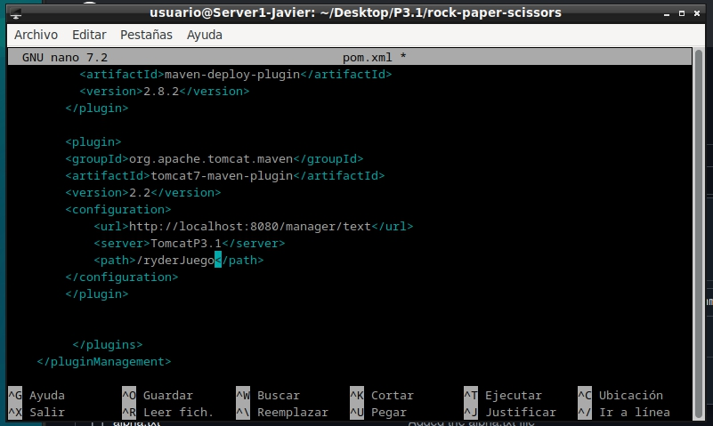
ahora podemos probar que maven esta funcionando correctamente con el comando:
mvn tomcat7:deploy
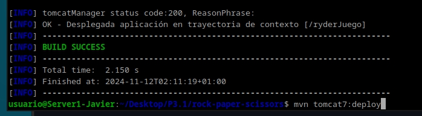
y si volvemos a la interfaz de administración de Tomcat, veremos que se ha desplegado la aplicación correctamente.
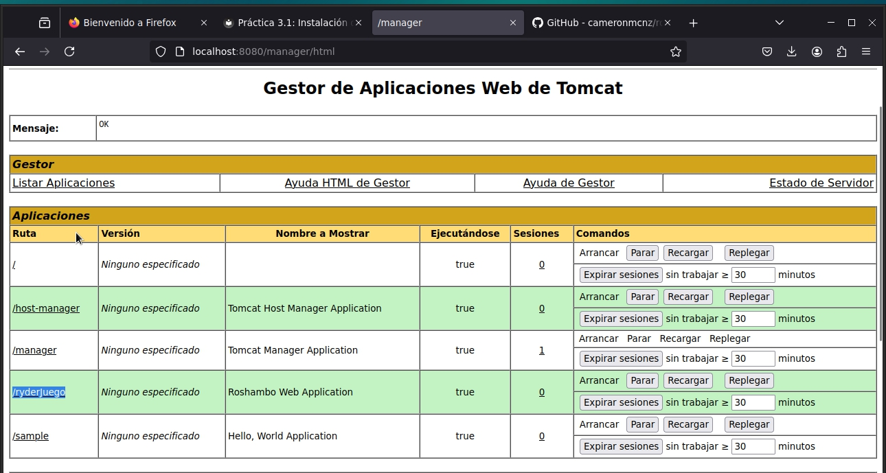
y la aplicación funcionando correctamente.
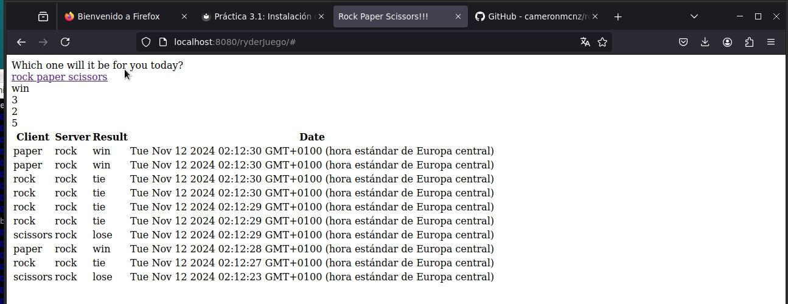